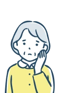
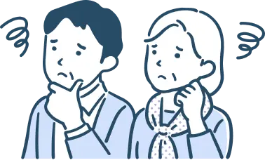

介護について、正しく知る機会は意外と少ないのではないでしょうか。
大切な人に、
負担ではなく “安心” を。
今、あなたができる 小さな備え
突然の介護、そのとき
“身内に迷惑をかけたくない”
と思うあなたに。
このページでは、
介護について考える際に
参考となる視点をまとめました。
もし、明日から介護が必要になったとしたら、
主にどなたが、どの時間帯で支えることになるでしょうか。
支える立場の方は、仕事や日常生活を
今と同じように続けられるでしょうか。
確かに多くの人にとって、
介護は日常から少し離れた出来事です。
しかし実際には、
年齢に関係なく事故や病気をきっかけに
ある日突然、介護が必要になるケースも少なくありません。
介護は準備がないまま始まることが多い。
それが、現実です。
近年では、身内の介護や看護を理由に、年間約9.3万人が仕事を辞めています。※1
※１ ＜厚生労働省「令和6年 雇用動向調査結果」＞より
実際にご家族を介護している方からは、次のような声もよく聞きます。

「介護」が家族に与える負担やストレスは、
決して軽いものではありません。
そんなかけがえのない人たちの暮らしと
自分の理想とする生活
を守っていくためには、
準備をすることが重要 になります。
次に、介護のことを考えるとき
避けて通れないのが 「お金」 と、 「役割分担」 の問題です。
受給年金額の心配もある中、
近年では、物価高やインフレも考慮しなくてはなりません。
また、様々な選択を迫られる中で、
「家族の意見が一致しなかった」というケースも少なくありません。

私たちは、
こうした現実に直面したとき、
「もう少し選択肢があればよかった」
と後悔する方を一人でも減らしたいと考え、
日々、情報や選択肢の提供に努めております。
保険はすべての不安を解消するものではありません。
しかし、民間介護保険を通してまとまった一時金を受け取ることができれば、
離職を選択せざるを得ない状況を避けたり、生活や判断を急に制限されることなく
次の選択肢を考える余裕が生まれます。
それは、
介護をする方・される方の双方の安心につながります
「いざというとき」に備えておきたい
という考えをお持ちの方は、
一度立ち止まって確認してみる価値があるかもしれません。
同じ想いから、
介護への備えを検討された方の声をご紹介します。
「妻と離れ離れにならずに済んで、本当によかった！」
斎藤 康雄 様 68歳
（お名前は仮名です）
介護保険はもともと妻の提案で夫婦揃って加入していました。その後、私が脳出血で倒れ、麻痺が残り、「この先は施設での生活になるのかもしれない…」そう覚悟せざるを得ない状況でした。
しかし、介護保険のおかげで介護ヘルパーさんを頼むことができ、現在自宅で介護を受けています。
一生添い遂げようと決めた妻と離れ離れになることなく、今も同じ屋根の下で過ごせていることに、心から感謝しています。これもひとえに介護保険のおかげです。
「介護の苦労を知るからこそ、私も加入しました。」
中村 百合枝 様 50歳
（お名前は仮名です）
私の父は50代で脳梗塞等を発症し、そのまま寝たきりになりました。
支出も調整しながら介護を続けていましたが、費用面だけでなく環境の変化もあり、苦しい状況が続きました。その経験から、「子どもには絶対に迷惑をかけたくない」と思い、50歳を機に将来の介護について真剣に考え、介護保険の加入を決めました。私の経験上、介護保険への備えは必要だと実感しています。
備えることは、愛する人を守ること。──
介護への備えは、特別なことではありません。
「誰にでも起こり得る将来の介護に向けて、自分で選べる状態をつくっておくこと。」
それが、安心につながります。
公的制度でどこまで支えられるのか。
家族にどれほどの負担がかかるのか。
その答えは、人それぞれ異なります。
だからこそ、「必要になる前」に
自分や家族に合った備えをしておくことが大切です。
「介護への備えを、今できる一歩から。」
もし、
「今のうちに備えておきたい」とご賛同いただけましたら、
お手元のお申し込書→お申し込み書に必要事項をご記入のうえ、
ぜひこの機会にお申し込みください。
なお、今回のプランは期間限定の企画となっており、お申し込み期限がございます。
配偶者さまの年齢が満35歳～満79歳であれば､配偶者さまもご加入が可能です｡
医師の診査や健康診断は不要、告知事項に回答するだけでお申込み→お申し込みが可能です。
この機会にぜひご検討ください。
お申し込み手順
Step
1
お送りしたお申し込み書の記載内容をご確認いただき、
必要事項をご記入ください。
Step
2
同封されている返信用封筒に封入し、
ご返送ください。投函の際、切手は不要です。
Step
3
保険期間の開始日までに、順次、保険会社よりご契約に関する
書類をお送りします。大切に保管ください。